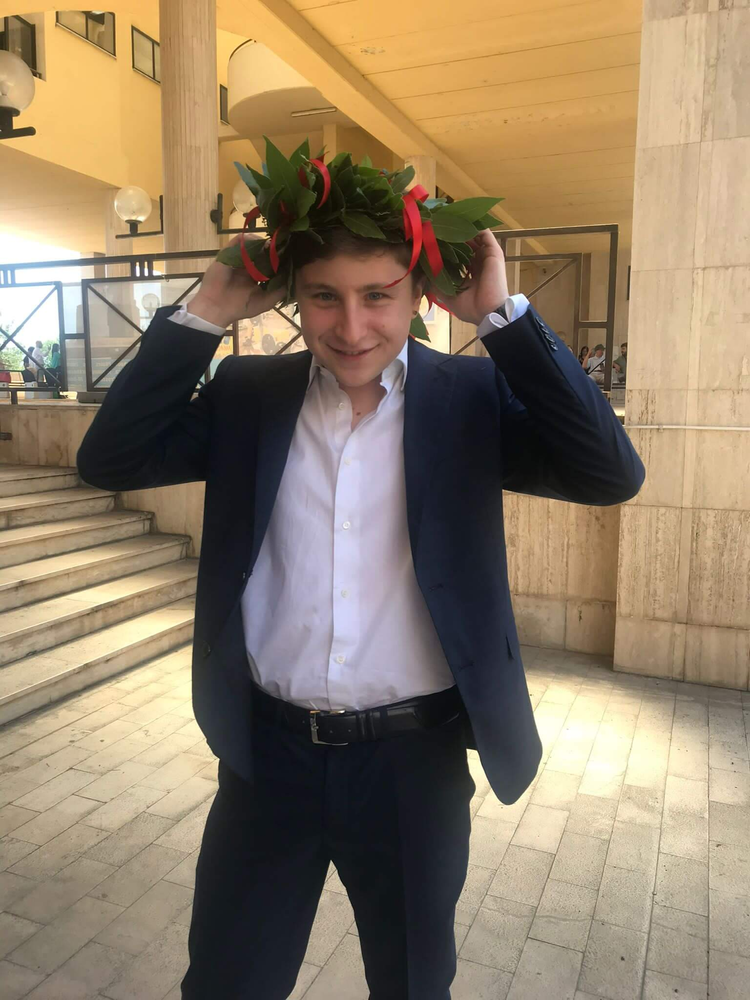

About me
My name is Francesco Montanaro and I am a years old Italian boy.
I am currently a Master Degree Student in Computer Science and Engineering at the Politecnico of Milan. Since childhood I have always loved technology and I find it amazing to watch as the digital revolution sculpts society and solves problems at a rate that has never before been seen. In recent years I have become passionate about the field of Artificial Intelligence, this is why I chose it as a specialization for my Master's Degree studies.
I am determined to improve my skills and knowledge more and more and do my part in solving problems that can make the world a better place for everyone.
I am currently a Master Degree Student in Computer Science and Engineering at the Politecnico of Milan. Since childhood I have always loved technology and I find it amazing to watch as the digital revolution sculpts society and solves problems at a rate that has never before been seen. In recent years I have become passionate about the field of Artificial Intelligence, this is why I chose it as a specialization for my Master's Degree studies.
I am determined to improve my skills and knowledge more and more and do my part in solving problems that can make the world a better place for everyone.

Studies
Master Degree
From: 26/09/2019 - To: In progress...Politecnico of Milan - Computer Science and Engineering
Bachelor Degree
From: 26/09/2016 - To: 23/07/2019University of Cassino and Southern Lazio - Computer Science and Telecommunications Engineering
Thesis on ‘Handwriting Analysis for the Diagnosis of Cognitive Impairment’
High School
From: 13/09/2011 - To: 3/07/2016Liceo scientifico Gioacchino Pellecchia (Scientific High School)
Certificates
From: 12/09/2009 - To: 20/06/2018Cambridge English Qualification - C1 Advanced
Work Experience
Since January 2020 I have worked as a freelancer in several digital projects as a Fullstack Developer of Web and Mobile Applications. I also developed Tools and Automatic Systems for online Data Extraction and Processing (Please visit the Projects page for additional information).During my studies and work experience, in addition to improving my skills and knowledge, I also learned the importance of teamwork and cooperation, always trying to solve problems within deadlines and with the utmost dedication.